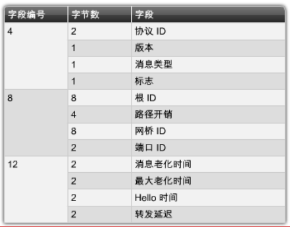
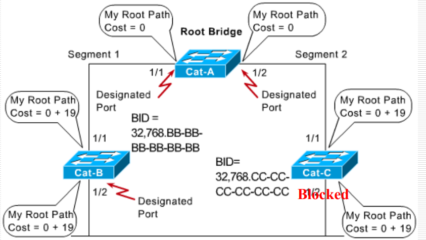
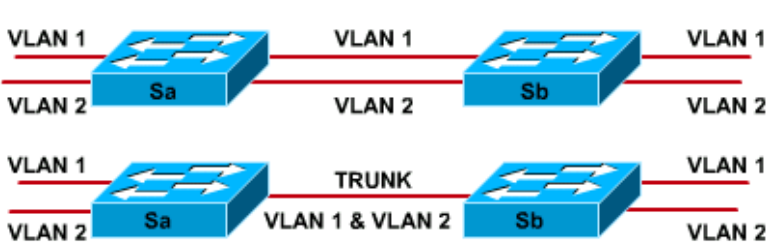

本文主要参考EagleBear2022的博客
局域网交换与虚拟局域网
1、交换机
网桥和路由器一般是通过软件来完成的，基于操作系统的。交换机是基于硬件的。
基本功能
- 根据MAC地址建立和维护交换表
- 将帧切换出接口到目标
对称交换（Symmetric Switching）：
- 可在相同带宽端口之间提供交换连接，但是用户访问其他网段上的服务器时可能会导致瓶颈
非对称交换（Asymmetric Switching）：
- 通过将带有服务器的网段连接到更高带宽的端口（100Mbps）减少瓶颈的可能性
- 需要内存缓冲
内存缓冲：
交换机中的内存区域，用于存储数据，直到数据可以从正确端口输出
基于端口的内存缓冲：（Port-based memory buffering）
- 每个端口都有一个buffer，数据包存储在buffer中
- 在目标端口繁忙时，一个数据包可能会延迟其他数据包的传输
- 其他端口可能会空闲，从而产生不均衡问题
共享内存缓冲：（Shared memory buffering）
- 所有端口共享的公用内存缓冲
- 可以在不传到其他队列中的情况下从入端口传到出端口出去
- 需要记录自己的端口信息
交换方式：
1、储存转发（Store-and-Forward）
- 交换机接收整个帧，最后校验CRC，然后再发往其他目的地
- 延迟可能会增加
2、直通（Cut-through）
- 减少延迟
- 分为两种：
1、快速转发切换（Fast forward switching）：检查目标MAC，看到帧的目的地址就立即转发
2、无碎片转发（Segment-free Switching）：在转发帧之前读取前 64 个字节以减少错误：避免碰撞和帧碎片
三种转发方式比较

不同层次的交换机：
- 第二层交换机：大规模集成电路，保证链路效率，有一个MAC地址
- 第三层交换机：基于硬件的转发机制，较高的帧转发性能（路由器基于路由表转发，是软件）；流控制，安全性更高，对数据流进行路由，生成 MAC 和 IP 的映射（消除了路由器对路由转发而导致的延时）
- 第四层交换机：可以根据端口主机的应用特点进行一定的流量控制
一般我们只用到二层交换机；交换机可以简单识别第三层和第四次信息。
2、生成树协议（STP）
出于各种原因，网络中可能会出现环路。
- 可能是故意冗余的结果，也可能是配置错误
- 可能带来的灾难：广播风暴（广播消息在网络中迅速传播并导致网络拥塞）、路由表错误
往往是第二层交换机的冗余导致的桥回路。（以太网MAC帧没有TTL字段，循环后可能会继续下去）
生成树协议综述
主要功能：在交换机/桥接网络中允许冗余路径，而不会因环路的影响而引起延迟。
- 通过计算稳定的生成树来防止回路
- 生成树帧（称为桥协议数据单元，bridge protocol data unit，BPDU）用于确定生成树拓扑。
方式：在正常情况下禁用一些端口来防止出现冗余。
STP名词解释
1、网桥ID（Bridge Identification，BID）
- 8个字节
- 高阶子字段：2个字节，表示网桥优先级，在0-65535之间（默认为32768），10进制表示
- 低阶子字段：6个字节，表示分配给交换机的MAC地址，16进制表示
2、STP成本值：成本越低越好
3、根路径成本：端口到根网桥（投票选出）的所有链接的累积成本
STP决策顺序
- 在拓扑里面最低的 root BID（选择具有最低BID的单个根交换机（先看网桥优先级，如果都相同则看MAC地址谁最低））
- 找到 Root bridge 的最低路径成本
- 每个路径都会选择一个最低 BID 的 sender 这个是针对一个链路的
- 每个路径再指定一个最低的 ID 端口
STP的BPDU帧

默认交换机每 2s 发送一次 BPDU，主要是维护最短的路径。
路径代价

在图中，需要将链路转化为对应的路径代价
5个STP状态
只有在交换机做 STP 时，交换机才会出现这五个状态。
- 阻塞：没有转发帧，听到了 BPDU
- 监听：不转发任何帧，监听数据帧（确定自己可以参加的交- - 换），也会发送一些数据帧表示自己状态变了
- 学习：不转发帧，学习地址
- 转发：转发帧，学习地址
- 禁用：没有转发帧，没有听到 BPDU
STP 过程：Blocking -> 20s Listening -> 15s Learning -> 15s Fowarding 或者 Disabled
初始STP收敛过程：
1、选举根交换机（根网桥，root switch）
- 每个交换机先宣布自己为根
- 交换信息，检查端口上所有BPDU以及在该端口上发送的所有BPDU，如果一个BPDU中的BID小于自己的，就替换自己的旧值并且这一BPDU的发送者被接受为新的根
2、选择根端口（root ports）
- 每个非根桥必须选择一个根端口。注意根桥不用选。
- 桥的根端口是最接近根桥的端口。（即从这个端口出发到根端口最近的一个端口）
- STP成本在BPDU被接收到时增加，而不是在将BPDU发送出去时增加。
3、选择指定端口（Designated Port）
- 每个网段都有一个指定端口。（注意区别，根端口是每个非根桥有一个，指定端口是每个网段有一个）
- 需要选择的是每个端口中，所在的路由器的根端口的STP成本最小的那个端口
- 该端口既向该网段又向根网桥发送流量，也从该网段和根网桥接收流量。
- 其他未被指定的端口就被block了。
完成这三步后，剩下的所有端口组合在一起就形成了一个最小生成树

3、虚拟局域网VLAN
为什么引入虚拟局域网？
随着网络数的增多，又由于交换机无法分割广播域，每个交换机在广播时需要发送到网络的每个角落，严重影响网络性能（广播风暴）。因此需要把一个大的广播域划分为几个小的广播域。而路由器会直接在网络层上分段将网络隔离，导致网络规划复杂，因此使用VLAN代替，解决二层问题。
vlan简介
-
根据不同指标（部门、功能等）对用户进行逻辑分组（区别于路由器的物理分组）
-
VLAN在第二第三层工作，控制网络广播，允许用户由网络管理员分配
-
VLAN创建一个不限于物理网段的单个广播域，将其视为子网
优点：
- 限制广播包，提高带宽的利用率。
- 创建虚拟工作组：可以一个部门工作的人划分为一个 VLAN，这样子即使他移动了办公位置，仍然能够正常办公
- 增强通信的安全性：其他 VLAN 用户网络收不到非本 VLAN 的报文，避免被监听
分组用户：广播帧只有在具有相同 VLAN ID 的一个或多个交换机的端口之间切换（VLAN ID 属于端口）
可以通过基于以下内容的软件对用户进行逻辑分组（即作为一种划分参考来人为划分）：
- 端口号
- MAC 地址
- 使用的协议
- 使用的应用
第三层交换机：为每一个网段设置一个 SVI（switch virtual interface，虚拟交换机结构，也可以理解为子接口），通过这个来进行不同网段之间的通信
VLAN的结构
vlan通过骨干网：

- 骨干网是用于 VLAN 间通信的区域，可以跑多个 VLAN，应该是高速链路
vlan中路由器：提供不同 VLAN 之间的连接。不能广播，但是VLAN1 上的用户可以向 VLAN2 上的用户发送电子邮件
在 VLAN 中的帧的使用：
- 帧过滤（Frame Filtering）：交换机检查有关每个帧的特定信息（MAC 地址或第三层协议类型），特定的 VLAN 记录或者映射
- 帧标记（Frame Tagging）：在整个网络骨干网中转发时，交换机在每个帧的标题中放置一个唯一的标识符。当帧离开网络骨干网时，交换机会在帧发送到目标终端站之前删除标识符。只和端口绑定，而不影响主机。帧标记只在第二层起作用
IEEE802.1Q 和 ISL
IEEE802.1Q：IEEE 标准，在标头中插入 VLAN 的标签以标识所属的 VLAN（帧标记）
ISL（Inter-Switch Link）：思科专有。ISL 在数据帧的前面添加一个 26 字节的标头，并在末尾附加一个 CRC（4 字节）。
| Name | Encapsulation | Label | Media |
|---|---|---|---|
| 802.1Q | No | Yes | Ethernet |
| ISL | Yes | No | Ethernet |
vlan的实现
静态vlan
交换机上的端口以管理方式分配给 VLAN（管理员手动配置）
- 安全，易于配置和监控，在控制移动的网络中效果很好

动态vlan
一个服务器来配置 VLAN 的信息。

交换机通过 MAC 地址或者哪一个协议，指定是哪一个 VLAN。
当工作站最初连接到未分配的端口时，交换机会检查表中的条目，并使用正确的 VLAN 动态配置端口。
以端口为中心的vlan

同一 VLAN 中的所有节点都连接到同一路由器接口
管理更容易，因为：
- 通过路由器端口分配用户
- VLAN 易于管理
- 提供更高的安全性
- 数据包不会“泄漏”到其他域
接入链路和骨干链路
1、接入链路（Access Links）：通过一个vlan报文，仅作为一个 VLAN 成员的交换机上的连接。
此 VLAN 被称为端口的本机 VLAN，连接到端口的任何设备都完全不知道 VLAN 存在。
2、骨干链路（Trunk Links）：通过多个 VLAN 报文，能够支持多个 VLAN，通常用于将交换机连接到其他交换机或路由器。

- 骨干是支持多个 VLAN 的点对点链接
- 骨干用于在两个实现 VLAN 的设备之间创建链接时节省端口
- 骨干链路不属于特定的 VLAN：充当交换机和路由器之间 VLAN 的通道。
- 可以将骨干链路配置为传输所有 VLAN 或有限数量的 VLAN。
交换机29xx中的配置
- VLAN 1 是出厂默认 VLAN 之一，是默认的以太网vlan
- 思科发现协议（CDP）和 VLAN 骨干协议（VTP）通告在 VLAN 1 上发送。
vlan配置命令
1、创建vlan
1 | Switch# vlan database |
2、将VLAN分配给一个或多个接口
1 | Switch(config)# interface fastethernet 0/9 |
3、添加vlan
1 | cat2950#vlan database |
4、验证vlan
1 | Switch# show vlan [vlanid] |
5、删除vlan
1 | switch（vlan）# no vlan vlanid [name /vlan-name] |
在局域网之间的路由

每个端口连接一个 VLAN，每个 IP 和一个 VLAN 连接
方法：将路由器上的端口划分为三个子端口Fa0/0.1、Fa0/0.2 和 Fa0/0.3
配置vlan间路由：
1 | Sydney(config)#interface FastEthernet 0/0 |
注意：如果是 Trunk Link：应该使用交叉线，而不是直通线；如果是 Access Link：直通线